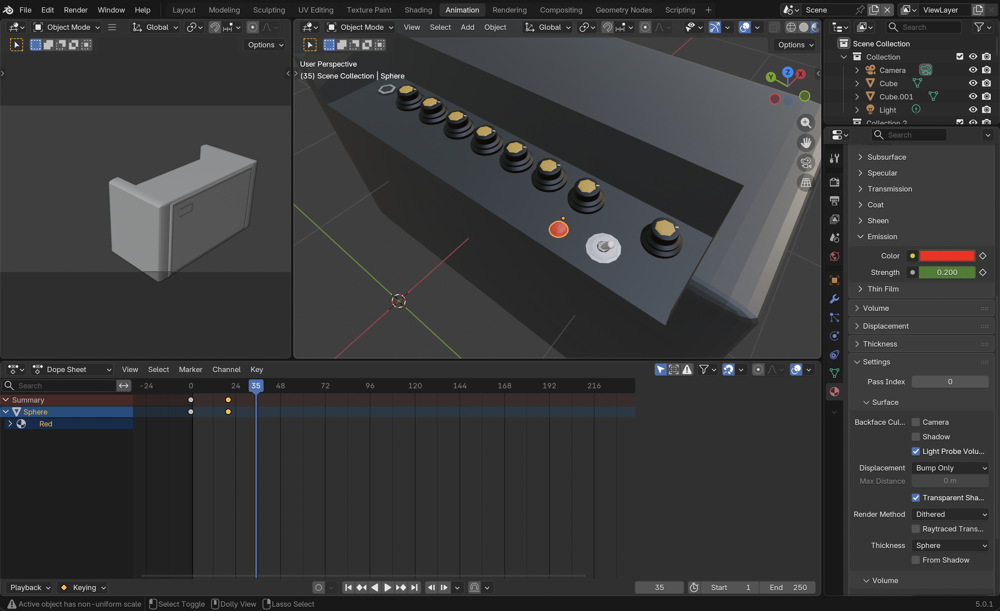

About
For my website, I created an educational website to help users learn the main parts of their guitar setup. I added a model of an acoustic guitar with strum animation, a guitar amplifier with a turning on/off animation, and a plectrum.
3D Models
-
Acoustic Guitar - Blender
I created a detailed 3D model of an acoustic guitar with realistic textures and materials. I also created an animation that vibrates the strings. The lighting uses HemisphereLight for ambient lighting and SpotLight for directional lighting.
-
Guitar Amplifier - Blender
I created a detailed 3D model of a guitar amplifier with realistic textures and materials. I also created an animation that turns the amplifier on and off, flipping a switch and turning on/off an indicator light.
-
Plectrum - Blender
I created a simple 3D model of a guitar plectrum with realistic textures and materials.

Design
The website features a clear layout, with model selection buttons and action buttons consisting of model animation, wireframe and rotating the model, that change function depending on the selected model. The layout was made using a bootstrap grid to ensure the 3D canvas and information panel adapts to different screen sizes. I used CSS to create readable text sizes andclear labels. I added the models to the site using three.js, also using it to put a light into the scene with a GUI to allow the user to control the lighting of the selected model.
Integration
I edited the audio downloaded from the internet so that it was in sync with the 3D animations, and so the strum and amp sound effects are triggered on the button click to match the animations. The information panel swaps the content based on the selected model and uses dropdown sections for the descriptions of the guitar parts. I also added a video to the guitar information panel to show a video explainng the guitar parts, and photos for each part section to help users identify the parts on the 3D model.
Interaction
The website allows users to rotate and zoom into the 3D models using OrbitControls, and there is a button to toggle the wireframe view. There are also buttons to trigger the animations and sound effects.
Implementation
Testing strategy
Functional testing: I verified the models loaded
correctly, the buttons performed as expected, the wireframe toggle
worked, the audio playback worked, and the animations triggered on the
button click.
Responsive testing: I tested the website on different
screen sizes e.g. mobile and tablet, to ensure the 3d canvas and
information panel is still usable.
Testing fixes: I adjusted the lighting to ensure
model is visible at all angles.
Deeper Understanding
- I used shape keys in Blender to create the string vibration animation.
- I used animation logic to control the animations e.g. LoopOnce to loop the animation once, and reverse playback using timeScale.
- I directly changed the model using javascript, using material.emmissive and emiissiveIntensity to simulate the amp indicator light turning on/off.
- I used details dropdowns to provide information about each guitar part, using innerHTML to replace the information based on the selected model.
Implementation and Publications
I have added an about page. I also have zipped and unzipped my project, opening it in VS code and running via a local web server to ensure everything loads correctly.
Generative AI Usage Record
| Use Case | Tool | Outcome |
|---|---|---|
| Debugging JavaScript/Three.JS model loading | Abacus.AI | Identified why the variables/functions were not available globally, due to missing brackets/script tags. |
| Plectrum texture | Abacus.AI | Used the Blender function 'Project From View (Bounds)' to allow an image texture to be applied to the plectrum model, and fixed the issue of the other side of the plectrum being mirrored by flipping the UVs. |
| Audio not playing | Abacus.AI | Found incorrect path file names and fixed the issues by ensuring the file names were consistent. |
| Model not appearing in the viewer | Abacus.AI | Found the issue was due to the loadModel and animate functions being inside a conditional statement, due to incorrect bracket placement, meanign they were never executed. By moving them outside the conditional statement, the model loaded and the animations worked. |
| The guitar neck mirror didnt export properly | Abacus.AI | Identified that the mirror modifier in Blender wasn't applied before exporting, meaning the mirrored part of the guitar neck didn't appear. By applying the mirror and exporting, the issue was fixed. |
Generative AI was used to provide descriptions for the guitar, amp and plectrum.
Final Submission Links
-
ITS Web Server URL:
https://users.sussex.ac.uk/~jl2067/3dapp/assignment/ -
GitHub 3D App Codebase:
https://github.com/jakeeydee/web3dapps -
GitHub / 3D Models URL:
https://github.com/jakeeydee/web3dapps/tree/main/assets
(Models are stored within the project assets folder)
References
- Three.js Documentation - https://threejs.org/docs/
- Bootstrap Documentation - https://getbootstrap.com/docs/5.3/getting-started/introduction/
- Blender Manual - https://docs.blender.org/manual/en/latest/
- MDN Web Docs - https://developer.mozilla.org/en-US/